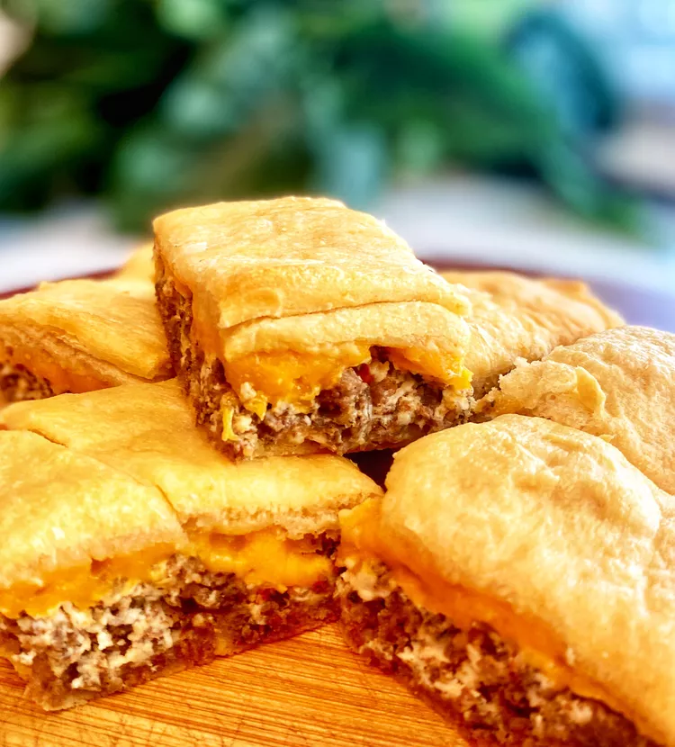

Sausage Casserole

Description
This casserole is a great grab and go breakfast food, however
it works perfectly as a dinner as well (My personal preference).
Just cut into squares and serve them hot or cold. Swap regular
rotel for hot rotel, mild sausage for spicy, or add a teaspoon
or two of Tabasco for a nice kick.
Ingredients
- 1 pound pork sausage
- 8 ounces cream cheese
- 1 10 ounce can rotel
- 2 8 ounce cans crescent dinner rolls or crescent dough sheet
- Optional: 2 tsp Tabasco
Steps
- Preheat oven to 375.
- If using crescent rolls: Unroll 1 can of dough into 2 long
rectangles. Place in ungreased 13x9-inch (3-quart) glass
baking dish; press over bottom and 1/2 inch up sides to
form crust. If using dough sheets: Unroll 1 can of dough.
Place in ungreased 13x9-inch (3-quart) glass baking dish;
press over bottom and 1/2 inch up sides to form crust.
- In 12-inch skillet, cook sausage over medium heat, stirring
frequently, until no longer pink. Remove sausage from skillet;
discard drippings. To same skillet, add cream cheese. Cook
over low heat until melted. Add cooked sausage, rotel, and
Tabasco; stir to coat. Spoon evenly over crust in baking dish.
- If using crescent rolls: Unroll second can of dough on work
surface. Press to form 13x9-inch rectangle; firmly press
perforations to seal. Carefully place over top. If using dough
sheets: Unroll second can of dough on work surface. Press to
form 13x9-inch rectangle. Carefully place over top.
- Bake 21 to 26 (24 gets perfect crust) minutes or until golden
brown. Cool 15 minutes. Cut into small squares.